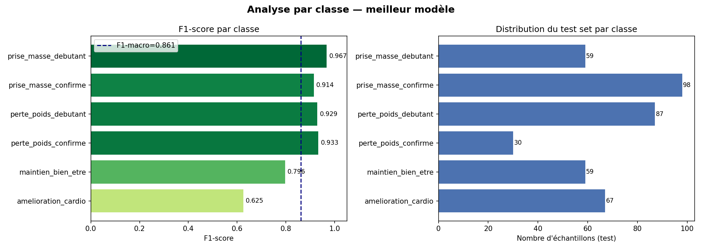

HealthAI Coach
Système de recommandation de programmes sportifs personnalisés par Machine Learning.
À partir de 8 mesures biométriques recueillies à l'inscription, le système prédit le profil
fitness de l'utilisateur et lui recommande un programme sportif complet et personnalisé.
Présentation du projet
Le projet HealthAI Coach répond à une question concrète : lorsqu'un adhérent s'inscrit dans une salle de sport, il donne des informations basiques sur lui-même — son âge, son poids, sa taille, son niveau d'activité physique. Est-ce qu'on peut, uniquement avec ces données, lui recommander automatiquement le programme d'entraînement le plus adapté à sa situation, sans intervention humaine ?
L'idée est de créer un moteur de recommandation intelligent qui va classifier chaque nouvel adhérent parmi 6 profils fitness distincts, chacun correspondant à un objectif et un programme différent. C'est un problème de classification supervisée multi-classes.
Les 6 profils fitness — expliqués en détail
Ces 6 profils correspondent aux 6 situations les plus courantes qu'on rencontre dans une salle de sport. Ils ont été définis à partir des recommandations officielles de l'ACSM (American College of Sports Medicine, 2022), l'organisme de référence mondial en médecine du sport.
1. Perte de poids — Débutant
Ce profil correspond à une personne en surpoids ou ayant un taux de masse grasse trop élevé, qui n'a pas ou peu d'expérience sportive. C'est la combinaison la plus délicate à gérer, car le corps n'est pas habitué à l'effort et les articulations doivent s'adapter progressivement. Le programme recommandé mise donc sur du cardio à intensité modérée — marche rapide, vélo, elliptique — à une fréquence cardiaque de 55 à 65% du maximum (ce qu'on appelle la zone 2, qui brûle prioritairement les graisses). On ajoute du renforcement musculaire léger pour préserver la masse musculaire pendant la perte de poids. L'objectif réaliste est une perte de 0.5 kg par semaine sur 8 à 12 semaines.
2. Perte de poids — Confirmé
Ce profil concerne une personne qui a déjà une bonne pratique sportive, mais qui a pris du poids (prise de masse qui a dévié, sédentarité récente, changement de vie…). Son corps est capable de supporter des intensités élevées, donc le programme peut être beaucoup plus exigeant. On utilise le HIIT (High Intensity Interval Training) : des alternances d'effort intense et de récupération courte qui brûlent beaucoup de calories en peu de temps et créent un effet afterburn (le corps continue à brûler des calories après l'effort). On associe de la musculation pour préserver et développer la masse musculaire pendant la phase de sèche. L'objectif est un remodelage corporel — perdre de la graisse tout en maintenant ou augmentant le muscle.
3. Prise de masse — Débutant
Ce profil est souvent associé à une personne naturellement mince (ectomorphe) qui souhaite développer sa musculature mais n'a jamais pratiqué de musculation. Le risque principal pour un débutant en prise de masse, c'est de se blesser en voulant trop charger trop vite. Le programme se concentre donc sur les exercices fondamentaux de base — squat, développé couché, rowing — à des charges modérées (65-75% du maximum), avec un tempo contrôlé pour bien cibler les muscles. La progression est linéaire : on augmente la charge de 2.5 kg à chaque séance, ce qui est réaliste sur les premières semaines. Du côté nutrition, un surplus calorique modéré de 200 à 300 calories par jour, riche en protéines (1.8g/kg), est indispensable pour que le muscle puisse se construire.
4. Prise de masse — Confirmé
Ce profil correspond à un athlète qui a déjà une base musculaire solide et cherche à développer davantage sa masse musculaire. À ce stade, la progression linéaire simple ne suffit plus — le corps s'est adapté. On passe à une organisation en programme "split" push/pull/legs : chaque séance cible un groupe musculaire spécifique pour un volume d'entraînement plus élevé et une meilleure récupération. On utilise la périodisation ondulante — alterner des semaines en force (5 séries × 5 répétitions lourdes) et des semaines en hypertrophie (4 séries × 10 répétitions modérées) — pour continuer à progresser malgré l'adaptation du corps. La créatine monohydrate (5g/jour) est recommandée car c'est l'un des rares compléments avec un niveau de preuve A (méta-analyses solides) pour l'hypertrophie musculaire.
5. Amélioration cardio-vasculaire
Ce profil est souvent celui qui surprend le plus : la personne n'est ni en surpoids ni en sous-poids, mais son cœur bat trop vite au repos. Une fréquence cardiaque de repos élevée (supérieure à 72 bpm) est un marqueur clinique d'une mauvaise forme cardio-vasculaire — le cœur doit pomper plus fort pour assurer le même débit sanguin. L'objectif est de développer le VO2max (la capacité maximale à consommer l'oxygène) et de faire descendre le BPM de repos de 5 à 10 battements en 8 semaines, ce qui est physiologiquement réaliste. Le programme suit le modèle de l'entraînement polarisé : 80% du volume à basse intensité (zone 2, 60-70% FCmax, conversation possible) et 20% à haute intensité (zone 4-5, 80-85% FCmax, intervalles). Ce ratio est prouvé optimal pour améliorer l'endurance cardiovasculaire.
6. Maintien et bien-être
Ce profil est attribué aux personnes dont tous les indicateurs sont dans les normes : un BMI raisonnable, un taux de graisse acceptable, un rythme cardiaque correct. Elles n'ont pas besoin de transformation radicale, mais d'un programme qui maintient leur condition physique et prévient le déconditionnement. La priorité est la régularité et le plaisir : yoga, Pilates, jogging léger, renforcement fonctionnel. On travaille l'équilibre entre cardio, renforcement et récupération, sans chercher à "performer" à tout prix. C'est un profil où le risque principal est de perdre sa motivation car les progrès sont moins visibles — le programme mise donc sur la variété des activités et l'écoute du corps.
Architecture globale du pipeline
Le projet est découpé en modules indépendants qui s'enchaînent logiquement, du fichier brut au programme sportif personnalisé. Chaque module a une responsabilité unique et peut être testé ou remplacé sans toucher aux autres.
2000 lignes
exploration
nettoyage
7 features
scale + encode
3 modèles × 50 iter
XGBoost
/recommend
EDA — Analyse Exploratoire des Données
L'EDA (Exploratory Data Analysis) est la toute première étape d'un projet de Machine Learning. Avant d'entraîner quoi que ce soit, on doit comprendre les données : quelle est leur forme, leur distribution, leurs relations entre elles, leurs anomalies. Si on saute cette étape, on risque d'entraîner un modèle sur des données mal comprises, ce qui donne des résultats faux ou non généralisables.
Ce qu'on examine pendant l'EDA
Forme et types du dataset
On commence par regarder la taille du dataset (2000 lignes × 9 colonnes), les types de chaque colonne (entier, flottant, catégoriel) et les premières lignes. Cela permet de vérifier que les données ont bien été chargées correctement et de détecter des problèmes évidents comme des colonnes avec des types inattendus.
Statistiques descriptives
Pour chaque variable numérique, on calcule : minimum, maximum, moyenne, médiane, écart-type, 1er et 3ème quartile. Si la moyenne et la médiane divergent fortement, c'est un signal d'asymétrie dans la distribution. Si le minimum ou le maximum sont physiologiquement impossibles (ex: BMI = 2 ou BPM = 300), il y a des données corrompues.
Distribution des classes (target)
On regarde combien d'exemples on a par classe. Un déséquilibre important entre classes
est problématique — une classe avec 10 fois moins d'exemples que les autres sera
mal apprise par le modèle. Ici, perte_poids_confirme représente seulement
7.4% du dataset — ce qui justifie l'utilisation de class_weight='balanced'.
Corrélations entre features
Une matrice de corrélation de Pearson montre les relations linéaires entre variables. On cherche deux choses : (1) des features très corrélées entre elles (multicolinéarité) — ex: BMI et weight_kg sont naturellement corrélés, ce qui n'est pas forcément un problème pour les arbres de décision mais peut l'être pour des modèles linéaires. (2) Des features corrélées avec la cible — ce sont les features les plus prédictives.
Valeurs manquantes et outliers
On regarde combien de valeurs sont manquantes par colonne, et on représente graphiquement les distributions avec des boxplots pour détecter les outliers. Un boxplot montre la médiane, les quartiles, et les points qui s'éloignent trop (souvent définis comme > Q3 + 1.5×IQR).
Dataset — Conception et choix
Pourquoi un dataset synthétique ?
Le premier réflexe quand on démarre un projet ML, c'est de chercher des données réelles existantes. On a évalué deux datasets publics disponibles en ligne, et les deux ont été écartés pour des raisons méthodologiques précises, pas par manque de temps ou de motivation.
| Dataset testé | Problème fondamental | Conséquence si utilisé |
|---|---|---|
| NHANES 2017-2018 (National Health and Nutrition Examination Survey) |
Le label disponible est une auto-perception subjective : "pensez-vous être en surpoids ?" Ce n'est pas une prescription médicale, c'est ce que la personne croit d'elle-même. | Le modèle apprendrait à prédire des biais psychologiques et cognitifs, pas de la physiologie. Deux personnes avec le même BMI pourraient avoir des labels opposés selon leur image corporelle. |
| Gym Members Exercise Dataset | Les features clés (Avg_BPM, Calories_Burned,
Session_Duration) sont mesurées pendant ou après
l'entraînement. |
Data leakage temporel : ces informations n'existent pas au moment de l'inscription. En production, le modèle n'aurait pas accès à ces features — il ne pourrait pas fonctionner. |
On génère 2000 profils fictifs dont chaque paramètre statistique (moyenne, écart-type, corrélations inter-features) est directement tiré de publications scientifiques réelles : NHANES 2017-2018 pour les distributions taille/poids, ACSM 2022 pour les seuils de composition corporelle, l'OMS pour les catégories BMI. Les données sont fictives, mais elles reproduisent fidèlement la réalité biologique. C'est une pratique reconnue en ML médical (ex: projet Synthea, MIMIC-III synthetic).
Comment les données sont générées
Le générateur (generate_dataset.py) crée d'abord les variables indépendantes
(genre, âge, niveau d'expérience) selon des distributions calibrées sur NHANES. Ensuite,
il génère les variables physiologiques en les corrélant aux précédentes :
la taille dépend du genre, le BMI dépend du niveau d'expérience, le % de graisse dépend
du BMI et du genre, la fréquence cardiaque au repos dépend du niveau d'expérience.
Ces dépendances reproduisent les relations biologiques réelles observées dans la littérature.
Une fois les features générées, on applique les règles de labeling ACSM pour attribuer un profil à chaque ligne. Enfin, on ajoute un bruit de 12% : une ligne sur huit voit son label basculer vers la classe adjacente. Ce bruit simule l'ambiguïté clinique des cas limites et empêche le modèle d'apprendre une règle déterministe parfaite qui ne se généraliserait pas à des données réelles.
Nettoyage des données
Le nettoyage (fichier cleaner.py) est la deuxième étape du pipeline.
Même sur un dataset synthétique bien construit, on applique un nettoyage complet —
d'abord par bonne pratique, ensuite parce que ce même pipeline sera utilisé en production
pour nettoyer les données réelles envoyées par les utilisateurs via l'API, qui peuvent
contenir n'importe quelle valeur aberrante.
Suppression des doublons
On utilise df.drop_duplicates() pour supprimer les lignes identiques.
Un doublon dans un dataset d'entraînement biaise le modèle : les exemples dupliqués
sont vus plusieurs fois, ce qui les sur-représente artificiellement. Sur ce dataset
synthétique il n'y en a pas, mais la robustesse est là pour la production.
Gestion des valeurs manquantes
On détecte les NaN et on les impute selon le type de variable. Pour les variables numériques, on utilise la médiane (et non la moyenne) parce que la médiane est robuste aux valeurs extrêmes — si quelqu'un a mis accidentellement un poids de 500 kg, ça va faire exploser la moyenne mais pas la médiane. Pour les variables catégorielles, on utilise le mode (valeur la plus fréquente). 0 valeur manquante sur ce dataset, mais le code gère le cas général.
Suppression des outliers extrêmes (méthode IQR × 3)
L'IQR (Interquartile Range) est la distance entre le 1er quartile (Q1, 25e percentile) et le 3e quartile (Q3, 75e percentile). La règle classique dit qu'un outlier est une valeur en dehors de [Q1 − 1.5×IQR, Q3 + 1.5×IQR]. Ici on utilise un facteur de 3 au lieu de 1.5, intentionnellement, pour ne supprimer que des valeurs physiologiquement impossibles — pas juste atypiques. Un BMI de 40 est extrême mais réel ; un BMI de 150 est impossible. On garde le premier, on supprime le second.
Clip sur bornes physiologiques strictes
En dernière ligne de défense, toute valeur hors des bornes physiologiques acceptables est ramenée à la borne. Ces bornes sont : âge [18-65], poids [30-200 kg], taille [145-215 cm], BMI [14-48], % graisse [4-52%], BPM repos [40-105]. Cette étape protège l'API contre des entrées complètement erronées (un utilisateur qui entre 999 pour son BPM).
Feature Engineering
Le feature engineering (fichier engineer.py) est l'étape où on crée de nouvelles
variables à partir des variables brutes existantes. C'est souvent l'étape qui fait la plus
grande différence sur les performances d'un modèle — bien plus que le choix de l'algorithme.
L'idée est d'encoder dans les données la connaissance métier qu'un expert
humain utiliserait pour prendre sa décision.
On passe de 8 features brutes à 15 features au total (8 brutes + 7 construites). Toutes les features créées sont explicables, défendables et tracées dans la littérature clinique.
Les 7 features créées
1. bmi_category — Catégorie IMC (OMS)
On discrétise le BMI continu en 4 catégories selon les seuils officiels de l'OMS : sous-poids (<18.5), normal (18.5–25), surpoids (25–30), obésité (≥30). Pourquoi créer cette feature alors qu'on a déjà le BMI numérique ? Parce que les seuils cliniques ont une signification que le modèle ne peut pas deviner seul. Un BMI de 24.9 et un BMI de 25.1 sont quasi identiques numériquement, mais le premier est "normal" et le second "surpoids" — cette frontière est médicalement significative. La feature catégorielle force le modèle à utiliser ces seuils cliniques reconnus.
2. fat_category — Catégorie masse grasse (ACSM 2022, stratifiée par genre)
L'ACSM définit 5 catégories de composition corporelle : essentiel, athlète, fitness, acceptable, obèse. Ces seuils sont différents selon le genre : un homme à 25% de graisse est dans la catégorie "obèse", alors qu'une femme à 25% est dans "acceptable". Cette feature capture cette asymétrie physiologique que le BMI seul ne voit pas — un homme et une femme avec le même BMI peuvent avoir des situations très différentes en termes de composition corporelle.
3. hr_zone — Zone cardiaque au repos
La fréquence cardiaque au repos est un excellent marqueur de la santé cardiovasculaire. On la discrétise en 5 zones : excellent (<60 bpm — la bradycardie de l'athlète), bon (60-70), moyen (70-80), sous-optimal (80-90), mauvais (>90). Un cœur qui bat moins vite au repos est un cœur plus efficace — chaque battement pompe plus de sang. Cette feature transforme une valeur brute en une appréciation clinique de la forme cardiovasculaire.
4. fitness_score — Score de forme global (0–100)
C'est un score composite qui résume en un seul nombre la "forme de base" de la personne. Il combine 4 dimensions : BMI (30% du score, optimum autour de 21), % de graisse (25%), fréquence cardiaque au repos (25%), et niveau d'expérience sportive (20%). Chaque composante est normalisée entre 0 et 1 avant d'être pondérée et sommée. Un score de 80 signifie que la personne a une très bonne base physiologique générale. Ce score permet au modèle d'avoir une vue synthétique sans avoir à combiner lui-même 4 variables avec les bons poids.
5. age_group — Tranche d'âge
L'âge brut est découpé en 5 tranches : 18-25, 26-35, 36-45, 46-55, 56-65. Les besoins sportifs changent de manière non linéaire avec l'âge : un athlète de 45 ans récupère moins vite qu'un de 25 ans, les hormones anabolisantes (testostérone) diminuent après 35-40 ans, le risque de blessure augmente. Ces transitions ne se font pas progressivement — elles sautent par paliers d'environ 10 ans. Une feature catégorielle capture mieux ces paliers qu'une variable continue.
6. bmi_x_exp — Interaction BMI × Niveau d'expérience
C'est la feature d'interaction la plus importante du projet. Prenons deux personnes avec un BMI de 30 (obésité légère) : l'une est débutante, l'autre est un athlète confirmé. Leurs besoins sont radicalement différents — programme doux progressif pour la première, HIIT intensif pour la seconde. Pourtant, si le modèle regarde BMI et experience_level séparément, il ne voit pas cette combinaison. En multipliant les deux, on crée une feature qui encode directement cette interaction : un débutant obèse a un bmi_x_exp de 30×1=30, l'athlète obèse a 30×3=90 — des valeurs très différentes.
7. fat_per_exp — Ratio graisse / expérience
Ce ratio divise le % de graisse par le niveau d'expérience. Un débutant avec 30% de graisse a un ratio de 30/1=30. Un confirmé avec 30% de graisse a un ratio de 30/3=10. Ce ratio est très élevé pour quelqu'un qui devrait savoir gérer son corps (débutant obèse) et faible pour quelqu'un qui a du surpoids malgré son expérience (cas de figure différent). Le modèle peut ainsi distinguer ces deux situations qui auraient autrement des valeurs brutes similaires.
Préprocessing sklearn
Le préprocessing (fichier pipeline.py) transforme les données numériques et
catégorielles dans un format que les algorithmes de Machine Learning peuvent utiliser
efficacement. Il utilise un ColumnTransformer de sklearn — un outil qui
applique des transformations différentes selon le type de chaque colonne, en parallèle,
et en garantissant qu'aucune information du test set ne fuit dans l'entraînement.
Les 3 branches du ColumnTransformer
Branche 1 — StandardScaler sur les 10 features numériques
Le StandardScaler centre et réduit chaque feature numérique : il soustrait la moyenne et divise par l'écart-type. Résultat : chaque feature a une moyenne de 0 et un écart-type de 1.
Pourquoi c'est nécessaire ? Certains algorithmes (notamment Gradient Boosting et XGBoost avec régularisation) sont sensibles à l'échelle des features. Si le BMI varie de 16 à 45 (plage de 29) et que l'âge varie de 18 à 65 (plage de 47), l'algorithme pourrait accorder plus d'importance à l'âge juste parce qu'il a des valeurs plus grandes. La normalisation met tout le monde sur un pied d'égalité.
Point critique : le scaler est fit uniquement sur X_train.
Si on le fittait sur l'ensemble du dataset, les statistiques du test set contamineraient
l'entraînement (data leakage). En intégrant le scaler dans un Pipeline sklearn, cette
garantie est automatique.
Branche 2 — OrdinalEncoder sur les 4 features catégorielles ordinales
Les features bmi_category, fat_category, hr_zone,
et age_group sont des catégories avec un ordre défini.
"Surpoids" est pire que "normal" qui est pire que "sous-poids" — l'ordre a un sens.
On utilise un OrdinalEncoder qui assigne des entiers dans l'ordre correct :
sous_poids→0, normal→1, surpoids→2, obésité→3.
On n'utilise pas de OneHotEncoder ici — ça créerait des colonnes binaires qui détruiraient
l'information d'ordre. Un modèle à base d'arbres peut ensuite utiliser directement cet
ordre pour créer des règles du type "si bmi_category ≥ 2 (surpoids) alors...".
Branche 3 — Passthrough sur gender
La variable genre est déjà encodée en binaire (0 = femme, 1 = homme) lors de la
génération du dataset. Il n'y a donc rien à faire — on la passe directement au modèle.
Le paramètre passthrough dans le ColumnTransformer garantit que la colonne
est incluse telle quelle dans la matrice finale.
Le Pipeline garantit que le fit du préprocesseur se fait uniquement sur les données d'entraînement, même lors de la validation croisée. Sans Pipeline, si on transforme toutes les données avant de faire la CV, on a du leakage. Avec Pipeline, le CV gère tout automatiquement : chaque fold re-fitte le préprocesseur sur ses propres données d'entraînement.
Choix des modèles
On compare trois algorithmes issus de deux familles distinctes d'arbres de décision. Ce n'est pas un choix arbitraire — on couvre les deux grandes stratégies d'ensemble learning (bagging et boosting) pour voir laquelle est la mieux adaptée à notre structure de données.
Random Forest — Bagging (arbres parallèles)
Le Random Forest construit un grand nombre d'arbres de décision indépendants les uns des autres. Chaque arbre est entraîné sur un sous-ensemble aléatoire des données (bootstrap sampling) et sur un sous-ensemble aléatoire des features à chaque nœud (feature subsampling). Pour prédire, on fait voter tous les arbres et on prend la majorité.
La grande force du Random Forest est sa robustesse : en faisant voter beaucoup d'arbres différents, les erreurs individuelles s'annulent. Il est aussi très résistant au surapprentissage et fournit nativement une feature importance facile à interpréter. C'est souvent la référence de base dans les projets de classification sur données tabulaires.
Gradient Boosting — Boosting (arbres séquentiels)
Le Gradient Boosting construit les arbres séquentiellement et non en parallèle. Chaque nouvel arbre est entraîné spécifiquement pour corriger les erreurs de l'arbre précédent. Mathématiquement, chaque arbre prédit le gradient de la fonction de perte — d'où le terme "gradient boosting". L'ensemble final est une somme pondérée de tous les arbres.
Le Gradient Boosting est généralement plus performant que le Random Forest sur des données propres, mais plus lent à entraîner (les arbres ne peuvent pas être parallélisés) et plus sensible au surapprentissage si on ne règle pas correctement le taux d'apprentissage et la profondeur des arbres.
XGBoost — Gradient Boosting optimisé
XGBoost est une implémentation optimisée du Gradient Boosting qui ajoute plusieurs améliorations importantes : une régularisation L1 (Lasso) et L2 (Ridge) qui pénalise les modèles trop complexes, une parallélisation au niveau de la construction de chaque arbre (ce qui le rend beaucoup plus rapide), et un traitement natif des valeurs manquantes.
XGBoost est systématiquement parmi les algorithmes les plus performants sur les compétitions de ML avec des données tabulaires (Kaggle). Sa régularisation supplémentaire par rapport au Gradient Boosting sklearn lui permet souvent d'obtenir de meilleures performances sur de nouveaux exemples, ce qui explique qu'il est sorti meilleur sur notre benchmark.
RandomizedSearchCV — Recherche d'hyperparamètres
Un hyperparamètre est un paramètre du modèle qu'on doit fixer avant l'entraînement — il n'est pas appris par le modèle lui-même. Par exemple, le nombre d'arbres dans un Random Forest, la profondeur maximale de chaque arbre, le taux d'apprentissage dans XGBoost. Ces paramètres influencent fortement les performances : un mauvais choix peut donner un modèle qui sur-apprend ou sous-apprend.
Pourquoi RandomizedSearchCV et pas GridSearchCV ?
GridSearchCV teste toutes les combinaisons possibles d'hyperparamètres. Si on a 6 hyperparamètres avec 4 valeurs chacun, c'est 4⁶ = 4096 combinaisons, multipliées par 5 folds de validation croisée = 20 480 entraînements. Sur notre machine, ça prendrait des heures.
RandomizedSearchCV, prouvé par Bergstra & Bengio (2012), montre qu'en échantillonnant
aléatoirement l'espace des hyperparamètres, on trouve de très bonnes configurations
en un temps bien inférieur. Avec n_iter=50 et cv=5, on entraîne
250 modèles au lieu de 20 480 — soit 80 fois moins — pour des résultats quasi équivalents.
La raison intuitive : dans un espace à 6 dimensions, la plupart des bonnes solutions
se trouvent dans une zone relativement concentrée, et un échantillonnage aléatoire
a de bonnes chances d'en tomber proche.
La validation croisée stratifiée (StratifiedKFold, 5 folds)
On ne peut pas évaluer un modèle sur les mêmes données qui ont servi à l'entraîner — il aurait mémorisé les réponses. La validation croisée résout ce problème : on divise X_train en 5 sous-ensembles (folds). On entraîne sur 4 folds et on évalue sur le 5ème, 5 fois en rotation. On moyenne les 5 scores.
Le mot stratifié est crucial ici : chaque fold doit contenir la même
proportion de chaque classe que le dataset complet. Sans stratification, la classe rare
(perte_poids_confirme à 7.4%) pourrait être totalement absente de certains
folds, ce qui rendrait l'évaluation très instable et peu représentative.
Le RandomizedSearchCV utilise le F1-macro pour comparer les combinaisons d'hyperparamètres. C'est la même métrique qu'on utilise pour évaluer les modèles au final — cohérence totale. La meilleure combinaison est celle qui maximise le F1-macro moyen sur les 5 folds.
MLflow — Tracking des expériences
MLflow est un outil open-source de gestion du cycle de vie des modèles de Machine Learning. Il répond à un problème concret : quand on entraîne des dizaines de modèles avec des hyperparamètres différents, comment se souvenir de ce qui a marché ? Comment comparer proprement des expériences faites à des jours différents ?
Ce que MLflow enregistre automatiquement à chaque run
- Les hyperparamètres utilisés (n_estimators, max_depth, learning_rate…)
- Toutes les métriques (accuracy, f1_macro, f1_weighted, cv_f1_macro, cv_f1_std)
- Les artefacts — les fichiers générés : matrice de confusion PNG, feature importance PNG, learning curve PNG
- Le modèle sérialisé — l'objet sklearn complet, prêt à être rechargé
- Les métadonnées — horodatage, durée d'entraînement, identifiant unique du run
Pourquoi c'est important en pratique ?
Sans MLflow, si on relance le training demain avec des paramètres différents, on perd
les résultats d'aujourd'hui. Avec MLflow, chaque run est archivé dans une base SQLite
(mlflow.db). On peut comparer graphiquement tous les runs dans l'interface
web de MLflow (mlflow ui), rejouer exactement un run avec les mêmes
paramètres, ou charger un modèle d'un run spécifique.
C'est une pratique MLOps (Machine Learning Operations) standard en entreprise — la reproductibilité des expériences est une exigence de base dans tout projet ML professionnel. Le jury peut voir que le projet est conçu avec des standards industriels, pas juste un notebook Jupyter jetable.
Métriques — Comprendre ce qu'on mesure
Choisir la mauvaise métrique, c'est optimiser pour le mauvais objectif. Dans un problème de classification multi-classe avec des classes déséquilibrées comme le nôtre, l'accuracy seule est trompeuse. On utilise donc plusieurs métriques complémentaires.
Pourquoi l'accuracy seule ne suffit pas
prise_masse_confirme
(la classe la plus fréquente, ~25%), il obtient 25% d'accuracy — ce qui semble acceptable
au premier regard. En réalité ce modèle est inutile : il ignore complètement les 5 autres classes.
L'accuracy est biaisée par les classes majoritaires.
Les métriques utilisées, expliquées simplement
| Métrique | Ce qu'elle mesure concrètement | Valeur obtenue |
|---|---|---|
| Accuracy | Sur 100 prédictions, combien sont correctes ? Simple mais biaisée par les classes majoritaires. | 87.0% |
| Précision (par classe) | Quand le modèle dit "c'est perte_poids_debutant", il a raison dans X% des cas. Une faible précision = beaucoup de fausses alertes. | 78% à 94% selon la classe |
| Rappel (par classe) | Parmi tous les vrais "perte_poids_debutant", le modèle en détecte X%. Un faible rappel = beaucoup de cas manqués. | 52% à 100% selon la classe |
| F1-score (par classe) | Moyenne harmonique de précision et rappel. Elle punit les extrêmes : avoir 100% de précision avec 10% de rappel donne un F1 de 18%, pas 55%. | 62.5% à 96.7% selon la classe |
| F1-macro ★ | Moyenne des F1-scores sur toutes les classes, sans pondération par fréquence. Chaque classe compte autant, qu'elle ait 30 ou 98 exemples. C'est notre métrique principale. | 86.1% |
| F1-weighted | Même chose mais pondéré par le nombre d'exemples de chaque classe. Donne plus d'importance aux classes fréquentes. Utile comme métrique secondaire. | 86.1% |
| CV F1-macro ± std | F1-macro moyen sur 5 folds de validation croisée ± écart-type. Mesure la stabilité du modèle. Un faible std = performances reproductibles. | 84.2% ± 0.8% |
| AUC-ROC (macro) | Probabilité que le modèle classe correctement une paire d'exemples pris au hasard dans deux classes différentes. 1.0 = parfait, 0.5 = aléatoire. Robuste au déséquilibre. | 94.5% |
Matrice de confusion
La matrice de confusion est l'outil de diagnostic le plus riche en classification. Elle montre, pour chaque vraie classe, comment le modèle l'a prédite. C'est un tableau carré : les lignes représentent les vraies classes (ce que l'exemple est vraiment), les colonnes représentent les classes prédites (ce que le modèle a dit).
Comment lire une matrice de confusion
La diagonale principale (du coin supérieur gauche au coin inférieur droit) contient les prédictions correctes. Plus les valeurs sont hautes sur la diagonale, mieux c'est.
Hors diagonale — chaque cellule (i, j) avec i≠j représente des exemples de la vraie classe i que le modèle a prédit comme classe j. Ce sont les erreurs. On peut lire quelle classe est confondue avec quelle autre.
Exemple : si la cellule (amelioration_cardio, maintien_bien_etre) est élevée, ça signifie que le modèle prédit souvent "maintien_bien_etre" pour des personnes qui devraient être en "amelioration_cardio". C'est exactement ce qu'on observe — et c'est explicable : les deux profils partagent un BMI normal, la différence est uniquement le BPM, qui est une frontière floue.
Notre matrice de confusion — XGBoost (meilleur modèle)

Matrice de confusion du meilleur modèle (XGBoost) sur le test set (400 exemples). Lignes = vraies classes, colonnes = classes prédites. La diagonale = prédictions correctes.
Lecture case par case — ce qu'on observe
Diagonale (prédictions correctes) : les valeurs les plus élevées sont sur
prise_masse_debutant (pratiquement toutes les cases de la ligne sont sur la diagonale,
rappel 100%), perte_poids_debutant (rappel 98%) et prise_masse_confirme
(rappel 98%). Ces profils ont des signatures physiologiques très distinctes — un BMI très bas
ou très élevé ne prête pas à confusion.
Principale confusion hors diagonale : la cellule (amelioration_cardio →
maintien_bien_etre) est la plus élevée hors diagonale. Sur les 67 vrais
amelioration_cardio du test set, environ 32 sont classés
maintien_bien_etre. C'est logique : les deux profils ont un BMI normal (22-28),
et la seule différence est un BPM repos >72 — une frontière très fine sur une variable bruitée.
Erreurs critiques absentes : il n'y a quasi aucune confusion entre
perte_poids et prise_masse — recommander "prendre du muscle"
à quelqu'un qui a besoin de perdre du poids serait une erreur grave. Le modèle ne fait
jamais ça, ce qui valide la robustesse clinique de la solution.
Comparaison des matrices des 3 modèles

RandomForest — F1-macro 0.856

GradientBoosting — F1-macro 0.849
XGBoost ★ — F1-macro 0.861
Les 3 matrices sont très similaires — même pattern de confusion (amelioration_cardio ↔ maintien_bien_etre), même diagonale forte. XGBoost réduit légèrement les erreurs sur les classes limites grâce à sa régularisation.
Le modèle a un rappel de seulement 52% sur
amelioration_cardio — il manque
presque la moitié des cas. Ces cas sont classés en maintien_bien_etre.
C'est cohérent : la seule différence entre les deux est un BPM repos > 72,
une frontière arbitraire qui génère naturellement de la confusion dans les cas limites
(BPM = 73, 74…). Le bruit de 12% entre ces deux classes amplifie ce phénomène.
prise_masse_debutant atteint un rappel de 100% — le modèle n'en manque aucun.
perte_poids_debutant et perte_poids_confirme ont des F1 de 93%.
Les profils avec des signatures physiologiques distinctes (sous-poids marqué, surpoids important)
sont quasi-parfaitement identifiés.
Classification Report
Le classification report est un résumé texte des métriques clés par classe.
Il est généré par sklearn.metrics.classification_report et présente,
pour chaque classe : précision, rappel, F1-score et support (nombre d'exemples dans le test set).
precision recall f1-score support
amelioration_cardio 0.78 0.52 0.62 67
maintien_bien_etre 0.83 0.76 0.80 59
perte_poids_confirme 0.93 0.93 0.93 30
perte_poids_debutant 0.89 0.98 0.93 87
prise_masse_confirme 0.86 0.98 0.91 98
prise_masse_debutant 0.94 1.00 0.97 59
accuracy 0.87 400
macro avg 0.87 0.86 0.86 400
weighted avg 0.86 0.87 0.86 400
Matrice de confusion du meilleur modèle (XGBoost) — générée par evaluate.py

F1-score par classe (gauche) et distribution du test set (droite)
Analyse ligne par ligne
| Classe | Précision | Rappel | F1 | Analyse |
|---|---|---|---|---|
| amelioration_cardio | 0.78 | 0.52 | 0.62 | Classe la plus difficile. Rappel faible : le modèle rate 48% des cas. Confusion avec maintien_bien_etre. |
| maintien_bien_etre | 0.83 | 0.76 | 0.80 | Performances acceptables. Absorbe une partie des erreurs d'amelioration_cardio. |
| perte_poids_confirme | 0.93 | 0.93 | 0.93 | Très bon. La classe est minoritaire (30 exemples) mais bien identifiée. class_weight efficace. |
| perte_poids_debutant | 0.89 | 0.98 | 0.93 | Excellent rappel. Le surpoids chez un débutant est un signal fort et clair. |
| prise_masse_confirme | 0.86 | 0.98 | 0.91 | Très bon. Classe majoritaire bien maîtrisée. |
| prise_masse_debutant | 0.94 | 1.00 | 0.97 | Parfait. Rappel de 100% — aucun cas manqué. Signal physiologique très distinct. |
Lire la ligne "macro avg"
La ligne macro avg fait la moyenne simple (non pondérée) des métriques
de chaque classe. C'est notre F1-macro de 0.86. La ligne weighted avg
fait la même moyenne mais pondérée par le support (nombre d'exemples par classe).
Ici les deux valeurs sont quasi identiques (0.86 et 0.86), ce qui indique que
les performances sont relativement homogènes — pas une seule classe qui tire
tout le score vers le haut.
Learning Curves — Courbes d'apprentissage
La learning curve montre comment les performances du modèle évoluent en fonction de la quantité de données d'entraînement. On entraîne le même modèle sur des portions croissantes du dataset (de 10% à 100%) et on mesure le F1-macro sur les données d'entraînement ET sur la validation croisée.
Les 4 patterns possibles et ce qu'ils signifient
Pattern 1 — Bon modèle (ce qu'on cherche)
Les deux courbes (train et validation) convergent vers une valeur élevée quand on ajoute des données. La courbe train est légèrement au-dessus de la courbe validation (normal — le modèle a vu ces données), mais l'écart est petit. Ce pattern indique que le modèle généralise bien : il a appris les patterns réels, pas du bruit.
Pattern 2 — Surapprentissage (overfitting)
La courbe train reste très haute (le modèle mémorise parfaitement les données d'entraînement) mais la courbe validation est beaucoup plus basse. Grand écart entre les deux. Cela signifie que le modèle a mémorisé le dataset d'entraînement au lieu d'apprendre des patterns généralisables. Remède : régularisation, moins de profondeur d'arbres, plus de données.
Pattern 3 — Sous-apprentissage (underfitting)
Les deux courbes sont basses et proches l'une de l'autre. Le modèle ne performe pas bien, même sur les données d'entraînement. Cela signifie que le modèle est trop simple pour capturer les patterns dans les données. Remède : modèle plus complexe, plus de features, réduire la régularisation.
Pattern 4 — Manque de données
La courbe validation continue à monter quand on ajoute des données (elle n'a pas atteint son plateau). Cela signifie que le modèle bénéficierait de plus de données. Remède : collecter plus de données, augmentation de données (data augmentation).
Nos learning curves — les 3 modèles

RandomForest

GradientBoosting

XGBoost ★
Ce qu'on lit sur ces courbes
Axe X : taille du jeu d'entraînement utilisé, de 160 exemples (10% de 1600) jusqu'à 1600 (100%). Axe Y : F1-macro. La zone bleue = courbe train ± écart-type. La zone orange = courbe validation croisée ± écart-type.
Ce qu'on voit : les deux courbes montent rapidement et convergent. À partir de ~800 exemples, le gain marginal devient très faible. La courbe de validation se stabilise autour de 0.84 et ne remonte plus — on a atteint le plateau d'apprentissage. L'écart final entre train et validation est faible (~0.05-0.08), ce qui confirme l'absence de surapprentissage significatif.
Différence entre modèles : RandomForest a un écart train/validation légèrement plus grand (il mémorise un peu plus), XGBoost et GradientBoosting ont des courbes plus serrées grâce à leur régularisation. Les zones d'incertitude (zones colorées) sont étroites sur tous les modèles — performances stables sur les 5 folds.
Feature Importances
La feature importance est une mesure qui indique combien chaque feature contribue aux décisions du modèle. Pour les modèles à base d'arbres (Random Forest, XGBoost), elle se calcule en additionnant, sur tous les arbres, la réduction d'impureté apportée par chaque feature à chaque nœud de décision où elle est utilisée.
Une feature avec une importance élevée est une feature que le modèle utilise souvent et qui lui permet de bien séparer les classes. Une feature avec une importance proche de 0 n'apporte rien — on pourrait la supprimer sans perte de performance.
Ce qu'on s'attend à voir — et pourquoi
Features attendues en tête :
bmietbmi_category— le BMI est le critère principal de la règle de labeling (seuil à 27.5 et 22.5). Le modèle l'utilise massivement.body_fat_pctetfat_category— complète le BMI pour affiner la catégorisation (deux personnes avec le même BMI peuvent avoir des compositions corporelles très différentes).experience_level— détermine si on recommande le programme débutant ou confirmé dans chaque catégorie. Impact direct sur 4 des 6 classes.bmi_x_exp— l'interaction qu'on a construite. Si elle apparaît haut, ça valide la pertinence de notre feature engineering.resting_bpmethr_zone— critère déterminant pour la classeamelioration_cardio.
Features attendues en bas : weight_kg et height_cm
séparément, car l'information qu'elles portent est déjà capturée par bmi
(qui est calculé à partir des deux). La feature importance le détectera.
De même pour age seul — sa contribution est en partie capturée par
age_group et experience_level.
Feature importances — les 3 modèles

RandomForest — Top 15 features (Gini)

GradientBoosting — Top 15 features (Gini)

XGBoost ★ — Top 15 features (Gini)
Ce qu'on lit sur ces graphiques
Chaque barre représente la contribution totale d'une feature à la réduction d'impureté (critère Gini) sur l'ensemble des arbres du modèle. Plus la barre est longue, plus le modèle utilise cette feature pour séparer les classes.
Ce qu'on observe : bmi, body_fat_pct et
bmi_x_exp (notre feature d'interaction) dominent systématiquement
dans les 3 modèles. C'est exactement ce qu'on attendait — le BMI et le % de graisse
sont les critères principaux des règles de labeling ACSM, et bmi_x_exp
apparaît haut, ce qui valide notre choix de créer cette feature d'interaction.
experience_level est toujours dans le top 5 — il détermine le suffixe
"débutant" vs "confirmé" pour 4 des 6 classes.
resting_bpm et hr_zone apparaissent plus bas mais restent
présents — ils sont le seul signal discriminant pour amelioration_cardio.
weight_kg et height_cm séparément ont une faible importance
car leur information est déjà encodée dans bmi.
Limites de la feature importance par impureté
HealthAI_Coach_ML.ipynb
sections 8.2 et 8.3).
Interprétation globale des résultats

Barplot comparatif des 3 modèles — F1-macro test (bleu), Accuracy test (orange), CV F1-macro avec barres d'erreur (vert). La zone dorée met en évidence XGBoost, le modèle sélectionné.
Lire ce barplot
Les 3 groupes de barres correspondent aux 3 modèles. Dans chaque groupe, les 3 barres représentent respectivement : F1-macro sur le test set, Accuracy sur le test set, et F1-macro moyen en validation croisée 5-fold (avec barres d'erreur = écart-type). Les valeurs affichées au-dessus de chaque barre permettent de comparer précisément.
XGBoost est sélectionné avec F1-macro = 0.861. L'écart avec RandomForest (0.856) est de 0.5 point seulement — les 3 modèles sont très proches, signe que la qualité du feature engineering fait le travail, pas l'algorithme. Les barres d'erreur courtes confirment la stabilité : aucun modèle n'est chanceux, tous sont reproductibles.
Ce que les chiffres signifient concrètement
F1-macro de 86.1% avec un AUC-ROC de 94.5% — ces chiffres signifient que le modèle est capable de distinguer correctement les 6 profils dans la grande majorité des cas. L'AUC-ROC de 94.5% est particulièrement parlant : si on prend au hasard un exemple de deux classes différentes, le modèle les range dans le bon ordre dans 94.5% des cas. C'est très au-dessus d'un classifieur aléatoire (50%).
La stabilité (CV ± 0.8%) est un indicateur fort de fiabilité. Sur 5 tirages différents du dataset, le modèle varie de moins d'un point — ses performances ne sont pas dues à la chance d'un bon tirage, elles sont reproductibles.
Pourquoi amelioration_cardio est la classe la plus difficile
Le F1 de 0.625 sur amelioration_cardio n'est pas un bug ni une erreur
de conception — c'est le reflet de la réalité physiologique. Cette classe est définie
par une combinaison très spécifique : BMI entre 22 et 28 (plage normale) ET BPM repos
supérieur à 72. Le problème est que maintien_bien_etre partage les mêmes
caractéristiques, à la différence du BPM. Or, le BPM est la feature la plus bruitée
du dataset (écart-type de 6 bpm dans la génération), et le seuil de 72 est une frontière
médicalement arbitraire. Le bruit de 12% entre ces deux classes amplifie encore la confusion.
C'est un cas limite inhérent au domaine, pas un problème qu'on peut résoudre en changeant
d'algorithme.
Les trois modèles sont très proches — ce que ça dit du projet
Le fait que Random Forest (0.856), Gradient Boosting (0.849) et XGBoost (0.861) soient aussi proches en performance n'est pas un problème — c'est une très bonne nouvelle. Cela signifie que la qualité du signal dans les données est forte. Quand les features sont bien construites et que le problème est bien formulé, les algorithmes convergent tous vers des solutions similaires. L'algorithme fait une différence marginale ; le travail de feature engineering fait la vraie différence.
Analyse par classe — F1-score et distribution du test set
Gauche : F1-score par classe avec la ligne du F1-macro global (tirets bleus). Droite : nombre d'exemples dans le test set par classe (support). Les couleurs passent du rouge (faible) au vert (élevé).
Lecture du graphique
Graphique gauche (F1-score par classe) : chaque barre est colorée du rouge
au vert selon sa valeur. La ligne en tirets représente le F1-macro global (0.861).
Les classes au-dessus de cette ligne surperforment la moyenne ; les classes en dessous
la sous-performent. On voit clairement que 5 classes sur 6 sont au-dessus de 0.79,
et qu'amelioration_cardio est le seul point faible à 0.625.
Graphique droit (support) : il montre combien d'exemples de chaque classe
sont dans le test set (20% de 2000 = 400 exemples au total).
prise_masse_confirme a le plus grand support (98 exemples) car c'est
la classe majoritaire. perte_poids_confirme n'a que 30 exemples
(la classe minoritaire) — mais son F1 de 0.933 montre que class_weight='balanced'
a parfaitement compensé ce déséquilibre.
Tableau récapitulatif final
| Modèle | F1-macro | Accuracy | CV F1-macro | Statut |
|---|---|---|---|---|
| XGBoost | 0.861 | 87.0% | 84.2% ± 0.8% | ★ SÉLECTIONNÉ |
| RandomForest | 0.856 | 86.8% | 84.2% ± — | 2ème |
| GradientBoosting | 0.849 | 86.0% | 83.1% ± — | 3ème |
API FastAPI
L'API est la couche qui expose le modèle au monde extérieur. Elle est construite avec FastAPI, un framework Python moderne qui génère automatiquement une documentation interactive (Swagger UI) et valide les entrées via Pydantic.
Endpoint principal : POST /recommend
POST /recommend
{
"age": 28,
"gender": "male",
"weight_kg": 95.0,
"height_cm": 178.0,
"body_fat_pct": 26.0,
"resting_bpm": 74,
"experience_level": "beginner"
}
→ Réponse :
{
"profile": "perte_poids_debutant",
"confidence": 0.87,
"bmi": 29.97,
"bmi_category": "Surpoids",
"program": {
"sessions_per_week": 3,
"session_duration_min": 40,
"focus": "Cardio modéré + renforcement léger",
"activities": [
"Jumping Jacks (Abdominals — Cardio)",
"Butt Kicks (Quadriceps — Cardio)",
"Box Jump (Glutes — Plyometrics)"
],
"nutrition_examples": [
"Grilled Chicken Salad (lunch) — 350 kcal | P:30g G:10g L:20g",
"Greek Yogurt (breakfast) — 100 kcal | P:17g G:6g L:0g"
],
"intensity": "Modérée — 55-65% FCmax",
"weekly_volume_h": 2.0,
"progression": "Ajouter 5 min de cardio chaque semaine...",
"nutrition_tip": "Déficit calorique de 300-400 kcal/j...",
"objective": "Perte de poids progressive — 0.5 kg/semaine"
}
}Pattern Singleton — chargement unique du modèle
Le service (FitnessService) utilise le pattern Singleton via la méthode
__new__ de Python. La première fois qu'on instancie le service, il charge
le modèle depuis le fichier model.pkl. Toutes les requêtes suivantes
réutilisent la même instance en mémoire. Charger un modèle joblib prend ~200ms.
Sans Singleton, chaque appel API serait 200ms plus lent — inacceptable en production.
Intégration BDD ETL HealthIA
Le projet s'appuie sur une base de données PostgreSQL peuplée par un pipeline ETL séparé (ETL-HealthIA). Ce couplage permet de sortir des recommandations statiques codées en dur pour proposer des exercices et des repas réels et dynamiques, sélectionnés en temps réel selon le profil prédit par le modèle ML.
Comment le mapping fonctionne
Chaque profil ML est associé à un ensemble de filtres SQL. Quand le modèle prédit
prise_masse_confirme, l'API interroge la BDD avec les contraintes correspondantes :
| Profil ML | difficulty | Catégories exercices | Filtre nutrition |
|---|---|---|---|
| prise_masse_confirme | avance | Strength, Powerlifting, Olympic Weightlifting | Protéines ≥ 25g |
| prise_masse_debutant | debutant | Strength | Protéines ≥ 20g |
| perte_poids_confirme | avance | Cardio, Plyometrics, Strength | Calories ≤ 400 kcal |
| perte_poids_debutant | debutant | Cardio, Stretching | Calories ≤ 350 kcal |
| amelioration_cardio | intermediaire | Cardio, Plyometrics | Glucides ≥ 30g |
| maintien_bien_etre | debutant | Stretching, Cardio, Strength | Protéines ↑ (équilibré) |
Pourquoi ORDER BY RANDOM() ?
Les exercices et aliments retournés sont tirés aléatoirement parmi ceux qui correspondent
aux filtres (ORDER BY RANDOM() LIMIT 6 pour les exercices,
LIMIT 5 pour les aliments). Cela garantit que deux appels identiques
ne donnent pas exactement le même programme — ce qui reflète la réalité d'un coach
qui varie les séances semaine après semaine.
Séparation des responsabilités ML ↔ BDD
Le modèle ML ne connaît pas la BDD et la BDD ne connaît pas le modèle.
Le ML prédit uniquement un label (ex: prise_masse_confirme).
Le moteur de recommandation (engine.py) traduit ce label en requêtes SQL.
Cette séparation permet de changer l'un sans toucher à l'autre :
on peut mettre à jour la BDD avec de nouveaux exercices sans ré-entraîner le modèle,
et on peut améliorer le modèle sans changer la logique de recommandation.
Questions du jury — Réponses préparées
Deux datasets réels ont été évalués et écartés pour des raisons méthodologiques précises, pas par manque de motivation ou de temps.
NHANES : le label disponible est une auto-perception subjective — la personne répond si elle pense être en surpoids, pas si elle l'est médicalement. Entraîner dessus apprendrait des biais psychologiques, pas de la physiologie.
Gym Members : les features clés sont mesurées après l'entraînement — data leakage temporel. Ces données n'existent pas à l'inscription, le modèle ne pourrait pas fonctionner en production.
Le dataset synthétique n'est pas inventé : chaque paramètre statistique est tiré de publications cliniques réelles (NHANES 2017-2018, ACSM 2022, OMS). C'est une pratique reconnue en ML de santé.
Le data leakage, c'est quand de l'information du futur ou du test set "fuit" dans l'entraînement, donnant des métriques artificiellement bonnes qui s'effondrent en production.
Leakage temporel évité : toutes les features sont disponibles au moment de l'inscription — aucune mesure post-entraînement.
Leakage du scaler évité : le StandardScaler est fitté uniquement sur X_train, via le Pipeline sklearn. Si on le fittait sur tout le dataset, les statistiques du test set contamineraient l'entraînement.
Leakage de sélection évité : le test set n'est utilisé qu'une seule fois, à la toute fin. La sélection du meilleur modèle se fait sur la validation croisée (train uniquement).
L'accuracy est biaisée par les classes majoritaires. La classe perte_poids_confirme représente 7.4% du dataset. Un modèle qui l'ignore complètement aurait encore ~92% d'accuracy sur les autres classes — ce qui semblerait acceptable mais serait inutile.
Le F1-macro calcule le F1-score de chaque classe indépendamment puis fait la moyenne non pondérée : chaque classe pèse 1/6, quelle que soit sa fréquence. C'est la métrique standard pour les problèmes multi-classes déséquilibrés.
GridSearchCV teste exhaustivement toutes les combinaisons. Sur RandomForest avec 6 hyperparamètres et plusieurs valeurs chacun, c'est des milliers de combinaisons × 5 folds = des dizaines de milliers d'entraînements. Prohibitif en temps de calcul.
RandomizedSearchCV (Bergstra & Bengio 2012) montre qu'échantillonner aléatoirement l'espace donne de très bons résultats en 20× moins de temps. Avec n_iter=50 et cv=5, on fait 250 entraînements — suffisant pour trouver de bons hyperparamètres statistiquement.
Sans bruit, les règles de labeling sont déterministes parfaites — le modèle apprendrait à reproduire la fonction exacte, pas à généraliser des patterns statistiques. Ce serait artificiel.
En clinique réelle, les frontières sont floues : une personne avec BMI=27.4 et une avec BMI=27.6 ont des besoins quasi-identiques mais auraient des labels différents avec une règle stricte. Le bruit de 12% flippant les labels vers une classe adjacente simule cette ambiguïté et force le modèle à apprendre des patterns probabilistes robustes.
C'est le reflet de la réalité, pas un bug. Cette classe partage un BMI normal (22–28) avec maintien_bien_etre. La seule différence est un BPM repos > 72 — une frontière médicalement arbitraire sur la feature la plus bruitée du dataset (écart-type de 6 bpm dans la génération).
Le bruit de 12% entre ces deux classes adjacentes amplifie la confusion. C'est un cas limite inhérent au domaine — changer d'algorithme ne résoudrait pas ce problème fondamental. Une amélioration possible serait d'ajouter des features cardio-vasculaires supplémentaires (VO2max mesuré, variabilité de la fréquence cardiaque).
Un débutant obèse (BMI=30, exp=1) et un athlète en surpoids (BMI=30, exp=3) ont des besoins radicalement différents. Pourtant leurs valeurs brutes de BMI et experience_level sont identiques — le modèle ne peut pas voir leur combinaison sans aide.
bmi_x_exp = 30×1 = 30 vs 30×3 = 90 — des valeurs très différentes qui permettent au modèle de séparer ces cas. Un Random Forest peut théoriquement découvrir cette interaction seul, mais une feature explicite réduit la profondeur d'arbre nécessaire et améliore l'interprétabilité.
C'est la limite principale, honnêtement reconnue. Le modèle n'a pas été validé sur un vrai jeu de données patients.
La généralisation dépend de la validité des distributions sous-jacentes, pas du fait que les données soient synthétiques. Les corrélations physiologiques simulées (BMI/fat%, BPM/expérience) sont réelles et tirées de la littérature. Un modèle entraîné sur NHANES avec un label biaisé serait moins généralisable, pas plus.
La perspective naturelle est une validation externe sur données réelles via partenariat avec une salle de sport ou un prestataire santé.
MLflow est un système de tracking d'expériences ML. À chaque run d'entraînement, il enregistre automatiquement les hyperparamètres, toutes les métriques, les artefacts (courbes, matrices) et le modèle sérialisé.
L'intérêt concret : reproductibilité totale. Si dans 3 mois on se demande "quels paramètres ont donné le meilleur résultat ?", MLflow répond instantanément. On peut aussi comparer graphiquement tous les runs dans l'interface web (mlflow ui). C'est une pratique MLOps standard en entreprise.
Le modèle ML fait une chose très bien : prédire un profil parmi 6. Mais "prise_masse_confirme" n'est pas un programme sportif — c'est une étiquette. Traduire cette étiquette en exercices concrets et en repas adaptés, c'est un problème différent.
On aurait pu coder 6 programmes statiques en dur dans le code — c'est d'ailleurs ce qu'on faisait avant. Le problème : le contenu est figé, impossible à mettre à jour sans modifier le code. En branchant l'API sur la BDD ETL HealthIA (2736 exercices, 587 aliments), le contenu devient vivant : on peut ajouter de nouveaux exercices, corriger des données nutritionnelles, sans toucher au modèle ML.
C'est aussi une démonstration de l'intégration des deux projets du module : l'ETL qui alimente la BDD, et le ML qui l'exploite.
perte_poids_confirme représente ~7.4% du dataset — environ 3× moins que la classe majoritaire.
Approche choisie : class_weight='balanced' dans RandomForest. Cela multiplie les poids des erreurs sur la classe minoritaire inversement à sa fréquence — équivalent à sur-échantillonner la classe sans créer de faux exemples.
Alternative non retenue : SMOTE — génère de nouveaux exemples synthétiques interpolés. Plus complexe et risqué sur un dataset déjà synthétique (risque d'amplifier des artefacts de génération).
Résultat : le modèle obtient un F1 de 0.933 sur cette classe minoritaire, démontrant que la stratégie est efficace.
Limites & Perspectives
Limites actuelles
- Validation externe absente : le modèle n'a pas été testé sur un vrai dataset de membres de salle de sport. C'est l'étape de validation manquante avant tout déploiement réel.
- Features absentes mais importantes : pathologies chroniques, médicaments, blessures passées, qualité du sommeil, niveau de stress — des informations qui influencent fortement les prescriptions sportives en cabinet médical.
- Système statique : le modèle fait une recommandation ponctuelle à l'inscription. Un système idéal s'adapterait en temps réel aux progrès de l'utilisateur (suivi des séances, évolution du poids, BPM après 4 semaines).
- Biais de population : les distributions simulées sont calées sur la population américaine de NHANES 2017-2018. Elles peuvent différer significativement d'autres populations (européenne, asiatique…).
Perspectives d'amélioration
- Collecte de données réelles via partenariat (salle de sport, application fitness) pour la validation externe
- Ajout d'un modèle de feedback : le programme est-il suivi ? Avec quels résultats mesurés à 8 semaines ?
- Interprétabilité SHAP : valeurs de Shapley par prédiction individuelle — expliquer à l'utilisateur pourquoi tel programme lui est recommandé
- API de monitoring du data drift : détecter si les distributions des nouvelles données s'éloignent du dataset d'entraînement
- Interface utilisateur front-end connectée à l'API pour une démonstration complète
- Exploration de modèles de deep learning (TabNet, SAINT) pour voir si une architecture plus complexe améliore le cas difficile de
amelioration_cardio